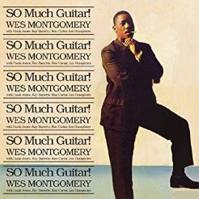

A Day In The Life (1967)
"A Day in the Life" is a jazz album by guitarist Wes Montgomery, released in 1967. The album features Montgomery's signature blend of jazz, pop, and soul influences, and it showcases his exceptional skill as a guitarist. The title track, a cover of The Beatles' song, is a standout with Montgomery's distinctive thumb-picking style. The album also includes a mix of standards and original compositions, highlighting Montgomery's ability to infuse warmth and accessibility into his jazz interpretations. "A Day in the Life" is celebrated for its melodic richness and remains a notable entry in Montgomery's discography.

So Much Guitar! (1961)
"So Much Guitar!" is a jazz album by guitarist Wes Montgomery, released in 1961. The album features Montgomery's distinctive thumb-picking style and showcases his virtuosity on the guitar. Recorded with a quintet that includes his brothers Buddy Montgomery on piano and Monk Montgomery on bass, the album captures the synergy of the Montgomery family's musical talents. Notable tracks include "Twisted Blues" and Montgomery's interpretation of the standard "Milestones." "So Much Guitar!" is celebrated for its energetic and soulful performances, solidifying Wes Montgomery's reputation as one of the most influential and innovative jazz guitarists of his time.
Incredible Jazz Guitar (2000)
"The Incredible Jazz Guitar of Wes Montgomery" is a seminal jazz album by guitarist Wes Montgomery, released in 1960. The album showcases Montgomery's extraordinary talent, featuring his unique thumb-picking technique and innovative approach to jazz guitar. Backed by a stellar rhythm section, including pianist Tommy Flanagan, bassist Percy Heath, and drummer Albert Heath, the album includes notable tracks like "Four on Six" and "West Coast Blues." Renowned for its impeccable musicianship and Montgomery's melodic improvisations, "The Incredible Jazz Guitar of Wes Montgomery" is considered a classic in the jazz guitar genre and a significant contribution to the evolution of jazz in the 1960s.